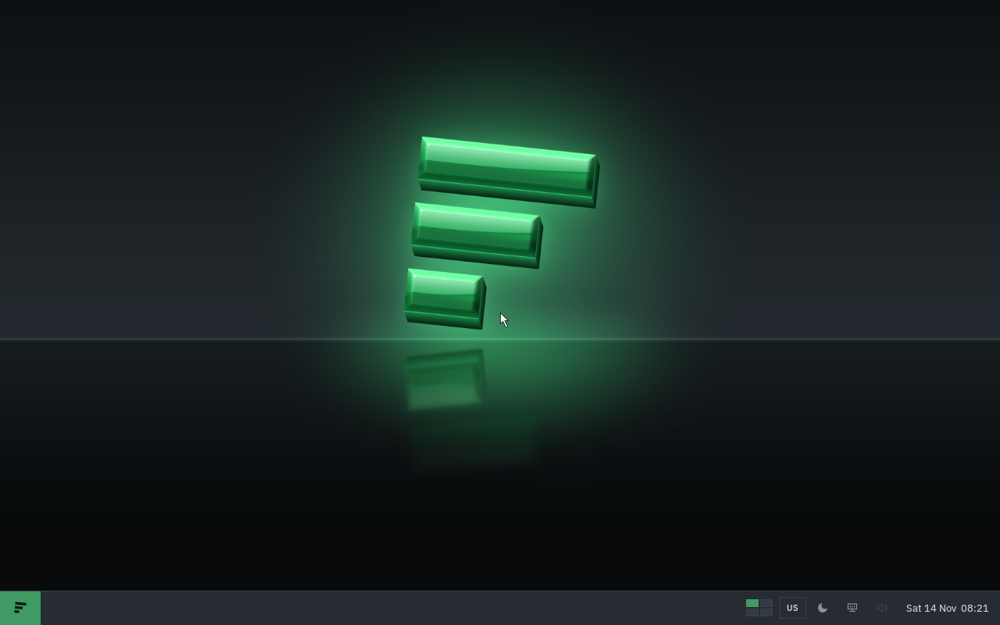
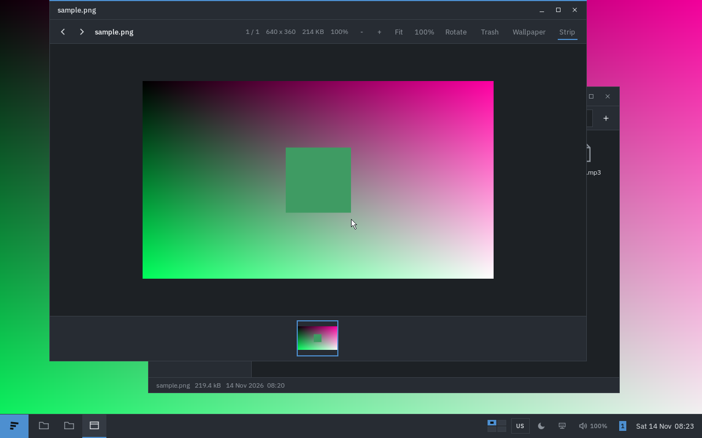
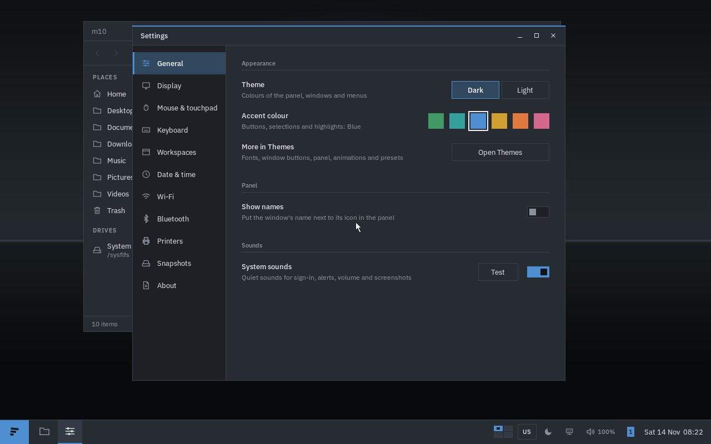
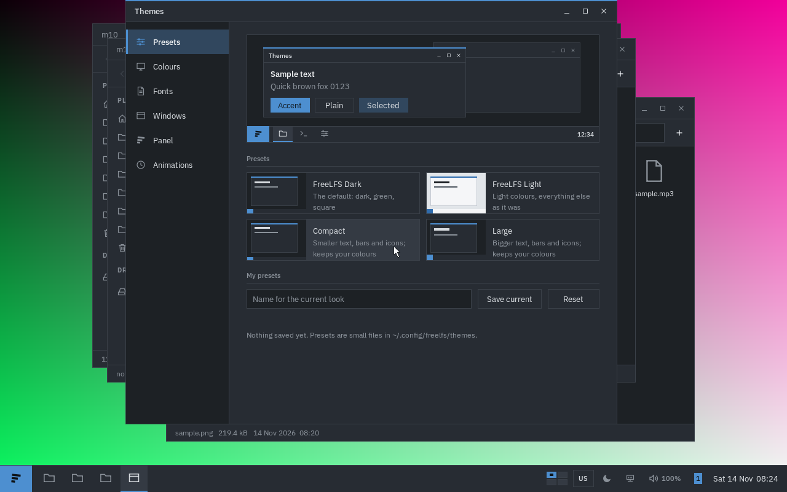
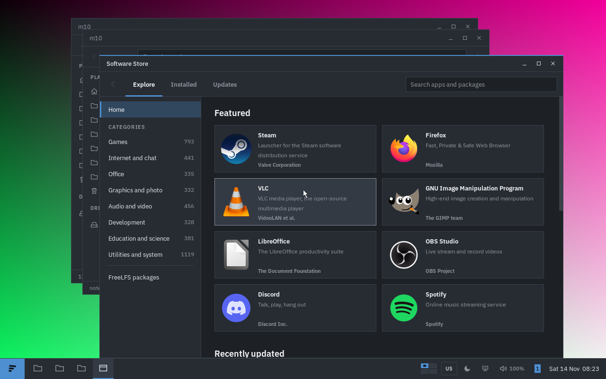
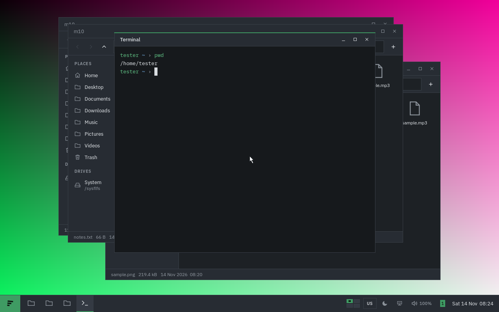
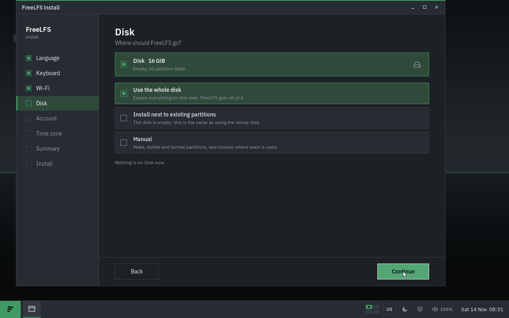
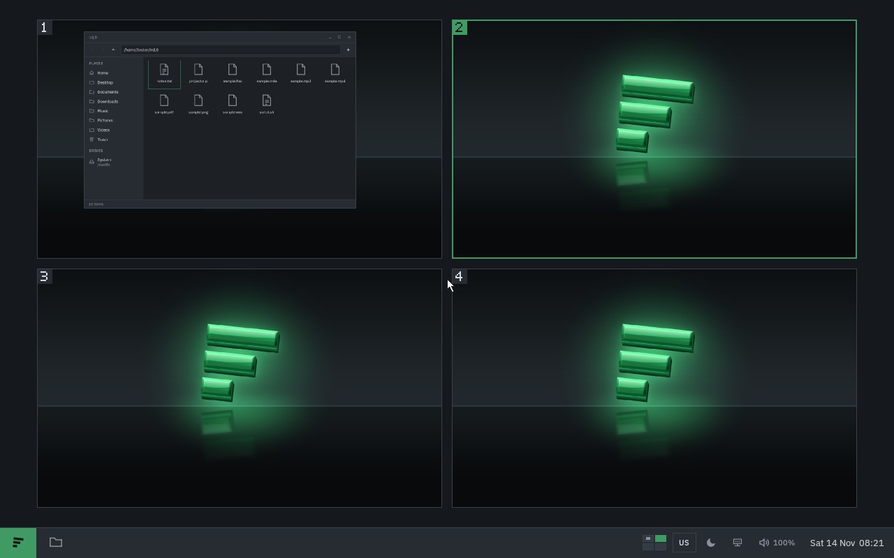

FreeLFS
FreeLFS is an independent Linux distribution, built from scratch with no parent distro. Its own pieces are written in C: the package manager (flpkg), the boot loader (flboot), the shell (flsh), a Wayland compositor (flcomp) and a desktop in the spirit of Linux Mint's Cinnamon.
It uses a rolling release: there are no numbered versions to jump between.
It is pre-alpha. It has been tested almost only in QEMU virtual machines and on one real laptop, where it showed serious bugs.
Small on purpose
The goal is a full desktop on a computer with 1 GB of RAM. In QEMU with 1 GB, the idle desktop uses about 85 MB of RAM. That is a measurement in a virtual machine, not a promise for every computer.
What's included
- flcomp: the Wayland compositor that draws the desktop
- flpanel: the panel, with the start menu and a tray (battery, network, volume)
- Files: the file manager
- Settings: system settings, including a Wi-Fi page
- Themes: accent colours and wallpapers
- Software Store: apps from Flathub and FreeLFS packages (on an installed system)
- Packages: install, update and remove FreeLFS packages
- FreeBWS: web browser, a light browser on WPE WebKit
- Terminal: the terminal, running flsh
- Text Editor: with syntax colours
- Archives, Images, Documents, Music, Videos: archive tool, image viewer, PDF viewer, music and video players
- General Manager: task manager
- Snappel: screenshot tool
- FreeLFS install: the installer (it erases the disk you pick)
- flpkg and flboot: package manager and boot loader, under the desktop
PRE-ALPHA. Do not use FreeLFS on an important machine. Things will break, and nothing is stable yet. Don't rely on it to keep your data safe. Try it in a virtual machine or on a spare computer.
Screenshots







